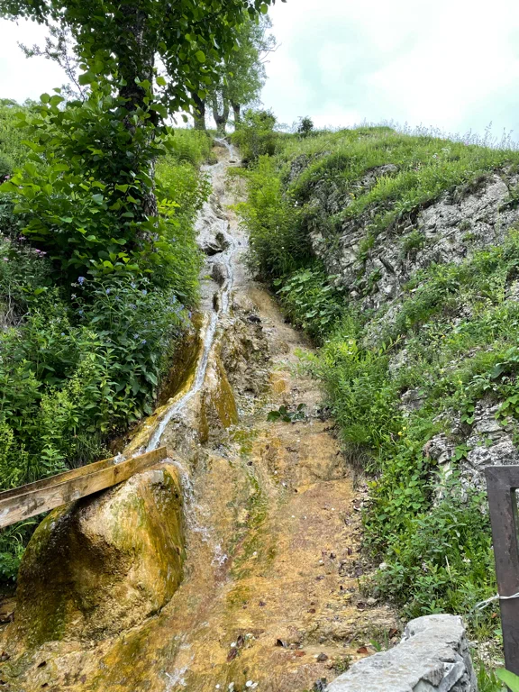

Природные красоты Чечни
-
Озеро Кезеной-Ам
Жемчужина Чечни и всего Северного Кавказа. Крупнейший в регионе водоём, расположенный на склоне Андийского хребта, славится невероятно красивыми пейзажами.
-
Озеро Галанчож
Галанчожское озеро находится близ одноимённого села, на высоте 1,5 тысячи метров над уровнем моря. Галанчож, притаившийся в низине альпийской долины и окружённый изумрудными пригорками и тенистыми рощами.
-
Аргунское ущелье
Одно из самых красивых мест Чечни — Аргунское ущелье. Образовалось оно тысячелетия назад, когда река Аргун пробила себе путь в неприступных горных отрогах.
-
Нихалоевские водопады
В Аргунском ущелье есть ещё один интересный каскад водопадов — Нихалоевские. «Младший» из Нихалоевских водопадов достигает всего 2 метров высоты.
-
Ахки-Тай
Туристический комплекс Ахки-Тай построен в 2018 году возле села Беной — родового поместья одного из самых крупных чеченских тайпов (племён). Местность, где находится Бенойское поселение, невероятно красива: священная река Ясси с чистейшей водой.
-
Тебулосмта
Высшая точка горной Чечни — Тебулосмта. Гора расположена на границе с Грузией, а высота её достигает 4,49 тысячи метров. Название горы происходит из грузинского языка, но есть версии, что оно ассоциировано с одним из чеченских аулов.
-

Харачойский водопад
На северо-западной окраине села Харачой есть особо охраняемая природная достопримечательность Чеченской Республики — Харачойский водопад. Охранный статус памятник природы носит с 2006 года.
Величественные мечети
-
Мечеть «Гордость мусульман»
В топ достопримечательностей Чечни входит роскошная белоснежная мечеть с четырьмя минаретами, которая украшает центр города Шали.
-

Мечеть «Сердце Чечни»
Одна из крупнейших в России и Европе мечеть «Сердце Чечни» имени Ахмата Кадырова построена в самом сердце республиканской столицы.
-
Мечеть «Сердце матери»
Мечеть «Сердце матери», посвящённая Аймани Кадыровой, отличается от классических мусульманских построек инновационным дизайном.
-
Бенойская центральная мечеть
Бенойская центральная мечеть имени Арсангири построена в горном селении Беной в 2018 году. Мусульманский храм находится на возвышенности и виден из многих точек Бенойского района.
Историко-архитектурные комплексы
-

Ушкалойские башни
На территории Аргунского ущелья, возле села Ушкалой, есть интересный историко-архитектурный памятник — каменные башни-близнецы.
-
Пхакоч
Пхакоч — так называется средневековый комплекс, расположенный у южной окраины селения Итум-Кали, на высоте 850 метров. Каменные строения занимают площадь 1,7 гектара.
-
Цой-Педе
Цой-Педе, также известный как "Город мёртвых", представляет собой один из крупнейших средневековых некрополей на Кавказе.
-
Донди-Юрт
Музей представляет собой отстроенный древний аул, занимающий территорию в 20-30 кв.м. Воссоздан комплекс башен и склепов, а также каменный дом, построенный по чертежам конца XVIII в.
-
Древний город Хой
Сегодня Хой является популярным туристическим направлением. В последнее время ведётся работа по восстановлению и сохранению культурного наследия аула.
-
Шира-Юрт
Архитектурно-этнографический музей «Шира-Юрт» сконструированный под средневековый чеченский посёлок. Был открыт 17 августа 2014 года на окраине села Герменчук, Шалинского района.
-
Шаройский комплекс
Шаройский историко-архитектурный комплекс расположен в селе Шарой Шаройского района Чечни. В состав комплекса входят семь боевых башен, 26 жилых и мечеть.
-
Никарой
Никарой состоит из пятиэтажной боевой башни с пирамидально-ступенчатой кровлей, одной полубоевой, достигающей в высоту шесть этажей.
Достопримечательности столицы республики
-
Грозный-сити
Современный высотный комплекс Грозный-сити открыт в 2011 году на берегу реки Сунжа. Грозненские высотки построены всего за 6 лет и входят в список наиболее посещаемых достопримечательностей города.
-
Лестница в небеса
На окраине Грозного, в новом посёлке Орцин-Мохк, есть интересная смотровая площадка. В отличие от стандартных аналогичных сооружений площадка построена в форме лестницы
-

Цветочный парк
Рядом с городом бетонных небоскрёбов Грозный-сити находится живописный парк — Цветочный. Он совсем не похож на стандартные дендрарии и розарии с лужайками и клумбами.
-
Национальный музей
История Наeционального музея Чечни началась в 20-е гг. прошлого века. В те времена экспозиции занимали всего две комнаты учебного здания и рассказывали о культуре и религии горцев.
-
Светомуз-ый фонтан
Летом 2021 года в столице Чечни появился светомузыкальный фонтан — самый большой в мире. По многим техническим характеристикам он легко может соперничать со знаменитым фонтаном в Дубае.
-
Мемориальный комплекс
Мемориал Славы, построенный в Грозном на улице Маяковского, одновременно посвящён Победе 1945 года и первому президенту Чеченской Республики Ахмату Кадырову.